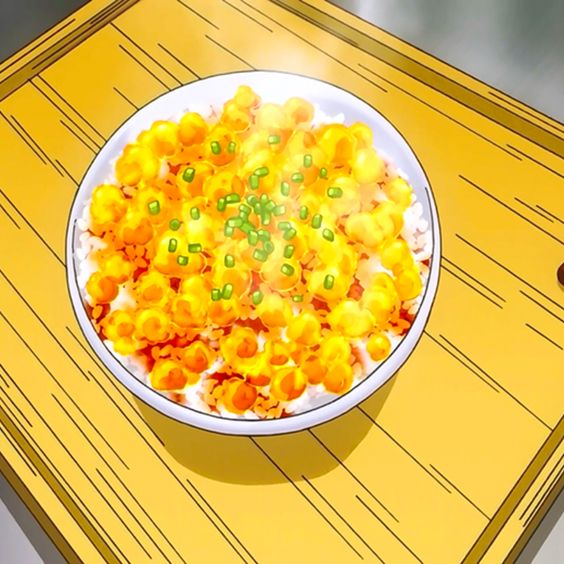

Transforming Furikake Rice

An innovative and fast recipe with great taste!
This amazing furikake rice with gelatinized cubes of flavor is a great recipe to amaze and delight your friends
with, or just enjoy on your own :D
Ingredients
- 2 tbsp. sesame oil.
- 8 Unbreaded chicken wings, uncooked
- 2 tsp. bonito soup stock
- 5 cups of water
- 2 teaspoon of minced ginger
- 1 Tbsp. sugar
- 3 Tbsp. of soy sauce
- 1/4 cup sake
- 2 Tbsp. gelatin
- 1 cup white rice
- 2 green onions
- 4 eggs
- Salt and pepper to taste
Steps
- Add sesame oil to a pan and heat to medium. Fry the chicken wings for 10-15 minutes, or until golden brown.
Save the chicken residue in the pan.
- Add water and soup stock to a pot and heat to a boil. Add the chicken and turn the broth down to medium low.
- Add the ginger, soy sauce, sake, and sugar to the chicken pan. Stir all of these ingredients with a wooden
spoon.
- Pour everything from the pan into the Broth. Simmer on medium-low for 20 minutes.
- Take the broth off the heat and let it sit for a few minutes. If there is a layer of fat on the top, take it
off. Take the chicken wings out and set aside.
- Add the gelatine to 1/2 of water and let bloom for 5 minutes. Mix the gelatine into the water until fully
dissolved. Add the gelatine mix to the broth mix.
- Grease a tray with butter. Add the broth. Cover with cling wrap, put in the fridge and and let solidify for
2 hours.
- Separate the chicken from the bone and skin. Add the chicken to the rice, unless you want the recipe to be
exactly like in Food Wars.
- Take the gelatin broth out of the fridge and Cut small cubes of broth gelatin.
- Scramble eggs. Add eggs and chopped green onions to rice. Add the aspic (meat broth jelly). Watch the cubes
melt and enjoy.
- Oagariyo!